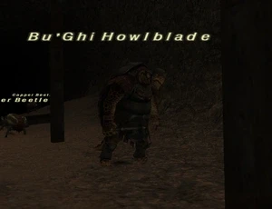

Level 75 reference · Zenith rules
|
Job: Warrior Notorious Monster |
 |

|
Zone |
Level |
Drops |
Steal |
Spawns |
Notes |
|
12 |
1 |
A, L, H | |||
|
HP = Detects Low HP; M = Detects Magic; Sc = Follows by Scent; T(S) = True-sight; T(H) = True-hearing JA = Detects job abilities; WS = Detects weaponskills; Z(D) = Asleep in Daytime; Z(N) = Asleep at Nighttime | |||||

Notes:
- Lottery Spawn from the Copper Beetles around I-7 on the second floor.
- Killable by: Solo at level 20
- Special Attacks: Mighty Strikes
Adapted from Eden Wiki: Bu'Ghi Howlblade · Contributors and history · CC BY-SA 4.0. Revision 46932. Layout, links and optional background text adapted for Zenith.